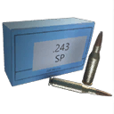
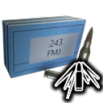
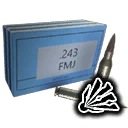

Damage by weapon
Damage per projectile
Each cell is one projectile's damage from that weapon at Q5 (base damage × the weapon's Q5 multiplier; shotguns show pellets × damage); hover a cell for the other qualities. Columns marked Q6 are experimental-only rounds: their cells show the damage from the weapon's experimental version (base × its Q6 multiplier, or its own experimental tuning where it has one), and “–” for weapons without an experimental version, which cannot fire them. Armour and component multipliers are in each round's own section below.
| Weapon | Quality multiplier Q1–Q6 | Q6 version | Full metal jacket | Soft-point | HEAT Q6 | Explosive Q6 |
|---|---|---|---|---|---|---|
| Meusser Hunting Rifle | 0.5 / 0.62 / 0.75 / 0.88 / 1 / 1 | Yes | 100 | 100 | 100 | 100 |
.243 Full Metal Jacket AmmoFull metal jacket
- Stack size
- 120
- Base damage
- 100
- Armour / comp. per shot
- 100 / 100
- Armour mult.
- ×1
- Component mult.
- ×1
- Falloff
- drops to 35% by ~1000 m
- Max range
- 1,000 m
The standard round. It does the weapon's full damage to both armour plates and components, so it is the safe all-round choice when you don't know what you'll meet.
Recipe per craft: 4 Explosive, 8 Steel
.243 Soft-Point AmmoSoft-point

- Stack size
- 120
- Base damage
- 100
- Armour / comp. per shot
- 75 / 125
- Armour mult.
- ×0.75
- Component mult.
- ×1.25
- Falloff
- drops to 35% by ~1000 m
- Max range
- 1,000 m
Soft-point is the hunting-rifle version of hollow-point: less damage to armour plates, more to components. A good first shot on an exposed weak spot.
Recipe per craft: 4 Explosive, 2 Lead
.243 HEAT AmmoHEAT

- Stack size
- 120
- Base damage
- 100
- Armour / comp. per shot
- 0 / 200
- Armour mult.
- ×0
- Component mult.
- ×2
- Falloff
- drops to 35% by ~1000 m
- Max range
- 1,000 m
HEAT (high-explosive anti-tank) rounds do no damage at all to armour plates but double damage to components. Aim at components only; a shot that lands on armour is wasted.
In-game description HEAT: specially crafted to directly deal significant damage to components that are behind armor. This ammunition however deals much less damage to non-component parts compared to the conventional ammo types, and no damage at all to armor itself.
Experimental only: it can be loaded only into an experimental (Q6) weapon (see Fired by).
Recipe per craft: 16 Explosive, 32 Steel, 1 Refined Aluminum Alloy
.243 Explosive AmmoExplosive

- Stack size
- 120
- Base damage
- 100
- Armour / comp. per shot
- 100 / 100
- Armour mult.
- ×1
- Component mult.
- ×1
- Falloff
- drops to 35% by ~1000 m
- Max range
- 1,000 m
Explosive rounds plant a small proximity bomb where they hit.
In-game description Proximity Bomb: crafted with a very small proximity bomb which is deployed on a surface that the bullet hits. Alternatively can be used directly at enemies which has a small chance to immediately detonate on impact dealing heavier damage than if planted.
The strength of the special effect (slow, tether damage, blinding time, bomb damage) is kept in a separate effect file that the extractor does not read, so there are no numbers for it here; the damage and multipliers are the bullet itself.
Experimental only: it can be loaded only into an experimental (Q6) weapon (see Fired by).
Recipe per craft: 16 Explosive, 8 Lead, 1 Refined Aluminum Alloy
In experimental weapons
Experimental weapons carry their own tuning for some rounds. When you fire the round from that weapon, these numbers replace the normal ones.
| Experimental weapon | Round | Damage | Pellets | Armour × | Comp. × | Falloff | Range (m) | Extra effect |
|---|---|---|---|---|---|---|---|---|
| Experimental AI-76 Assault Rifle | .243 Explosive Ammo | 100 | 1 | ×1 | ×1 | drops to 0% by ~0 m | 1,000 | – |
| Experimental AI-76 Assault Rifle | .243 Full Metal Jacket Ammo | 100 | 1 | ×1 | ×1 | drops to 0% by ~0 m | 1,000 | – |
| Experimental AI-76 Assault Rifle | .243 HEAT Ammo | 100 | 1 | ×0 | ×2 | drops to 0% by ~0 m | 1,000 | – |
“drops to 0% by ~0 m” is what the files hold for some of these entries; it looks like an empty falloff curve rather than a round that does no damage.
Weapons that use it1 weapon
Where to find it
The crafting schematic of each round, what it costs and what one craft takes:
| Ammo | Crafting schematic | Cost | Recipe per craft |
|---|---|---|---|
| .243 Full Metal Jacket Ammo | .243 Full Metal Jacket Ammo | 10 Ammo Schematic Points | 4 Explosive, 8 Steel |
| .243 Soft-Point Ammo | .243 Soft-Point Ammo | 1 Ammo Schematic Point | 4 Explosive, 2 Lead |
| .243 HEAT Ammo | .243 HEAT Ammo | 1 Experimental Schematic Point | 16 Explosive, 32 Steel, 1 Refined Aluminum Alloy |
| .243 Explosive Ammo | .243 Explosive Ammo | 7 Experimental Schematic Points | 16 Explosive, 8 Lead, 1 Refined Aluminum Alloy |
Where ammo comes from:
- Ammo boxes. The map files have 13,420 ammo box spawn points; what a box holds is rolled at random (a crate spawn point: the game may not put a crate on every spot). Ammo boxes on the map
- Destroyed machines drop ammo when you loot their wrecks.
- Crafting. Ammo schematics are bought with Ammo Schematic Points: “Acquired by crafting ammo or found as loot when exploring the world.” The map files place 23 pickups that give them. Ammo schematic points The experimental rounds' schematics are bought with Experimental Schematic Points: “Acquired by completing Base Assault and Defense missions.”
- The Ammo Pack refills ammo; 4 of them are placed by hand in the world. Ammo Packs on the map
- The Salvage skill gives more ammo from every container and machine.
Ammo box counts per region are on the main ammo page.